Starting with R and RStudio - A brief introduction for civil engineering courses
Ed Maurer, Santa Clara University
31 March 2026
This tutorial uses two input data files for water properties and atmospheric properties: water_properties_SI.csv and standard_atmosphere_SI.csv. If not provided, they can be found here. They can be downloaded and copied into a new directory (folder) you create for this exercise or can be read in directly from github, which is demonstrated below. In general, each R project should have its own directory, which is referred to as a working directory – this is where R will look for input files and where it will write any output. Setting a working directory is described below.
The first six pages of this introduction draw heavily from two excellent sources: Lovelace and Cheshire (2014) and Cleveland (2018). This is only a short introduction to get you started – many more complete guides are available, such as this Introduction to Programming in R. Applications of using R in hydraulics and water resources engineering are included in the aptly-named Hydraulics and Water Resources: Examples Using R.
1 Introduction
R is an open-source scripting language. Open-source means anyone can contribute to the development of the code, and many thousands of people have. It also means it is free to use, so in addition to being installed on the engineering computer system, you can install it on your personal computer (using any operating system). As you will see, it looks very much like Matlab in many ways, and can do almost anything you can imagine. It is widely used in academic and professional settings around the world.
It is a scripting language, meaning you execute commands and the output can be used in subsequent commands. What follows is a short run-through of an exercise to illustrate some of the capabilities of R using RStudio. RStudio is an interface for using R that is also free and makes it much more accessible.
1.1 Installing or accessing R and RStudio
If you are installing these on your own computer, first install R (from https://cran.r-project.org/) then install RStudio (https://posit.co/products/open-source/rstudio/). As an alternative, you can also use R and RStudio in a browser by using posit.cloud. Create a user profile to access RStudio and R with (as of Fall 2025) up to 25 projects and 25 hours/month of compute time for free.
The R and RStudio software are also available on ECC computers. If using it there, you will need to watch a few details as noted below. RStudio does not always work well with networked file locations.
1.2 How and why to write R code
Before continuing, watch a Youtube video describing R and RStudio, like this one. After watching that, you’ll be familiar with the interface and basic functions. There are many other online references, most visibly RStudio’s beginner page and stackoverflow. Google searches for R techniques often land at a stackoverflow exchange where problems have been solved. There is also an excellent introduction to R written by Bill Sundstrom and Michael Kevane of the SCU Economics Department.
Remember that, as with any programming language, there are often many ways to produce the same output in R. The code presented in this document is not the only way to do things. You should play with the code to gain a deeper understanding of R. Do not worry, you cannot ‘break’ anything using R and all the input data can be re-loaded if things do go wrong.
Table 1 shows water properties from the water_properties_SI.csv file, similar to standard reference texts.
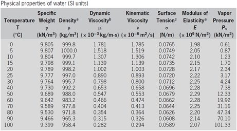
Now suppose you need to estimate the density of water at 44 C. The two pairs of temperature and density that surround 44\(^\circ\)C are (40\(^\circ\)C; 992.2 kg=m\(^3\)) and (50\(^\circ\)C; 988.0 kg/m\(^3\)). So, to estimate the unknown density using linear interpolation you can apply the following: \[\rho'=992.2+(988.0-992.2)\frac{(44-40)}{(50-40)}=990.52\]
This may need to be done many times in the course of hydraulics calculations, so automating it with a script will be very useful. A script will also allow the clear outlining of steps used to do any calculations, something necessary for anyone following your work. What follows is a short exploration of using R and RStudio to produce technical calculations in a professional format.
This document was written entirely in R, using R Markdown. R Markdown is an extremely flexible and powerful was to organize professional work. While this tutorial only introduces basic R scripting, a lot more can be done to produce very polished work.
2 Open a new project in RStudio and testing commands
→ IMPORTANT! If you are using R on a university lab computer (or other system where you do not have administrative privileges), follow the steps in Appendix 1 prior to continuing.
Open RStudio, and start the new project in a new directory (this is a good practice – different projects should always be in different folders!).
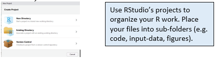
Next create the new directory name (which becomes the project name), ensuring the directory path begins with a letter (like C:, Z:, etc.), not a network location (starting with something like \):
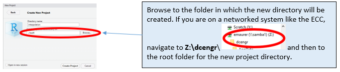
Now you’ll see the blank RStudio interface you’ll recognize from the video. Notice where the current working directory is shown on the RStudio interface.
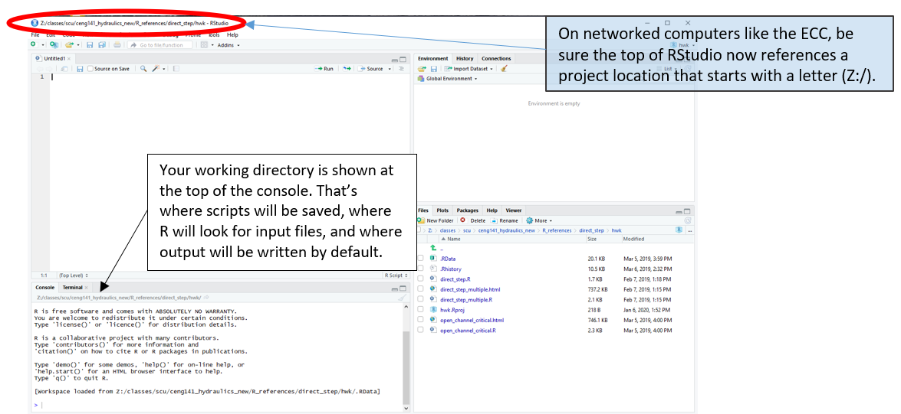
You can use the ‘Session’ menu to change the working directory if you need to (remembering that this is where R looks for input and where it writes output):
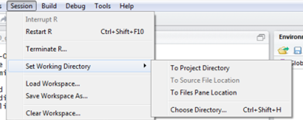
Now type a couple of lines of code into the console:
#test commands
x <- 1
print(x)## [1] 1R commands are all shaded in this document and output of those commands follows, which is done automatically by R Markdown. Commands can be copied and pasted into R Studio to reproduce everything that follows. Sometimes symbols like “<-“ or quotation marks need to be deleted and retyped, if they don’t paste properly.
Notice the <- is used instead of = to assign values to a variable in typical R code (either <- or = will work, though). Lines starting with # are comments to make the code understandable, but are ignored by R. Adding comments to your code is essential; make these meaningful so you remember what the code is doing when you revisit it at a later date. To create good code (for example your R script) it is important to organize and documentation it so others can follow what you did, and so you can look at it in the future and remember what you did.
2.1 Attributes of a well structured and documented script (adapted from Software Carpentry):
- At the beginning include a description of what the script does.
- Load the required packages (using
library()) and describe in a short comment what each is for. - Break your code into logical pieces, separated by blank lines, and include comments at the start of each.
- Never use
install.packagesin a script, since packages only need to be installed once. - If you have functions or constants defined, place them near the beginning of the script.
- Use consistent variable names and code style.
- Keep all of the source files for a project in one directory and use relative paths to access them.
- If you repeat commands more than twice, use a loop or an apply command instead.
- Always start with a clean environment instead of saving the workspace. Good practice is to go to Tools|Global Options and set this:
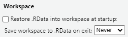
If you will hand in your code and what it produces as a deliverable product, see Appendix 2.
If you require help on any function, use the help command, e.g. help(plot) or the help through RStudio. Because R users love being concise, this can also be written as ?plot. Feel free to use it at any point you would like more detail on a specific function (although R’s help files are famously cryptic for the un-initiated). Help on more general terms can be found using the ?? symbol. To test this, try typing ??regression.
3 Starting an R script
Click the History tab in the upper right, highlight a couple of the commands you just entered, and press “To Source.”
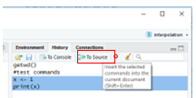
The commands will be entered in the upper left panel, which is where you’ll create your R script.A new R script can also be opened with File→New File→R Script.
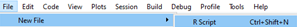
Click the save icon for the new script and rename it from Untitled to something like “interp.R” (File Names for R scripts always end with “.R”). The new name appears on the tab.
Remember any script should begin with a header and then load any
necessary libraries at the top of the script, as described above in
Section 2.1. A simple way to be sure you don’t forget to do this is to
use RStudio’s snippets. Go to Tools |
Global Options | Code, ensure Snippets are
enabled (checked) and click Edit Snippets. (You can also go straight
there by Tools | Edit Code Snippets).
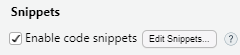
At the bottom of that window, add the following snippet (each line below the snippet line should begin with a tab – if you copy from here it might not paste in that way):
snippet header
## ---------------------------
##
## Script name:
## Purpose of script:
## Author:
## Date Created: 2024-04-10
##
## ---------------------------Save it to apply the changes. At the top of your script type
header and click the Tab key and a template is
added to the top of your script.
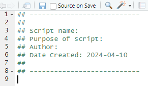
You can customize the snippet how you like, including using a header like in Appendix 2, which works nicely when compiled.
Now return to building a script.
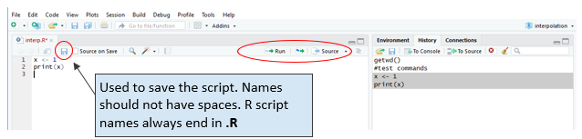
As you add content to a script you can highlight any lines and click “Run” to execute them, which is a good way to try out your code. If you click “Source” it runs all of the commands in the R script. Try that out and see what happens with the two lines of code shown. Now delete those two lines of code as they aren’t very useful.
Returning to our example, the first thing to do for interpolating values is to get the data from the table into R. That could be done by typing them in like this (notice the “c” in front tells R to concatenate the values into a list):
temps <- c(0,5,10,15,20,25,30,40,50,60,70,80,90,100)
densities <- c(999.8,1000,999.7,999.1,998.2,997,995.7,992.2,988,983.2,977.8,971.8,965.3,958.4)You can copy and paste these into your R script, highlight them and click Run to create these variables. You can look at these in the Environment tab on the upper right panel:
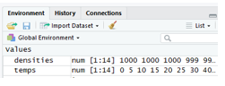
Now any one of these can be accessed by an index number (in R the first item in a list is numbered 1, as you might expect):
densities[2]## [1] 1000You can make these look like a table by binding them together as columns with cbind, and to be sure they have the same number of elements:
cbind(temps,densities)## temps densities
## [1,] 0 999.8
## [2,] 5 1000.0
## [3,] 10 999.7
## [4,] 15 999.1
## [5,] 20 998.2
## [6,] 25 997.0
## [7,] 30 995.7
## [8,] 40 992.2
## [9,] 50 988.0
## [10,] 60 983.2
## [11,] 70 977.8
## [12,] 80 971.8
## [13,] 90 965.3
## [14,] 100 958.44 Making a plot
How does density vary with temperature? Plot it to see, by executing this command:
plot(temps, densities, xlab="Temperature, C", ylab="Density, kg/m3", type="l")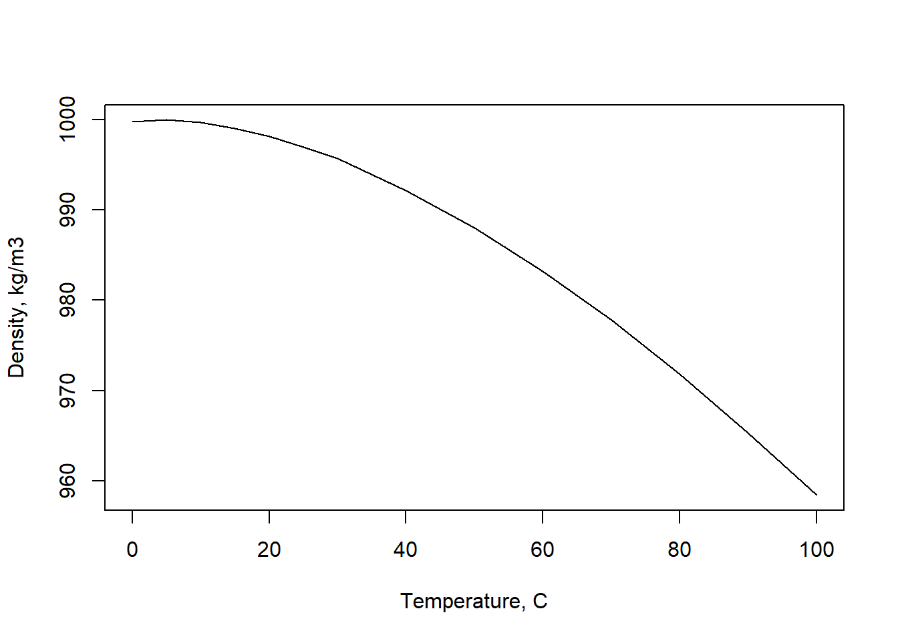
The plot will appear in the lower right panel of R Studio, on the Plots tab.
That’s helpful, but not a plot that can be turned in as a professional product. To plot the degree symbol, superscripts, and other special characters is easy (for example, try a google search of “R plot degree symbol”).
One way to create better annotation uses expression. Also, a
caption is important for a professional plot. In base R it be added
using sub in the plot command, or adding a
title command:
xlbl <- expression("Temperature, " (degree*C))
ylbl <- expression("Density," ~rho~ (kg/m^{3}))
plot(temps, densities, xlab=xlbl, ylab=ylbl, type="l")
# font.sub = 2 makes the caption bold, adj = 0 left justifies it (adj = 0.5 is centered)
title(sub = "Figure 1: This one has a caption", font.sub = 2, adj = 0)
grid() # add grid lines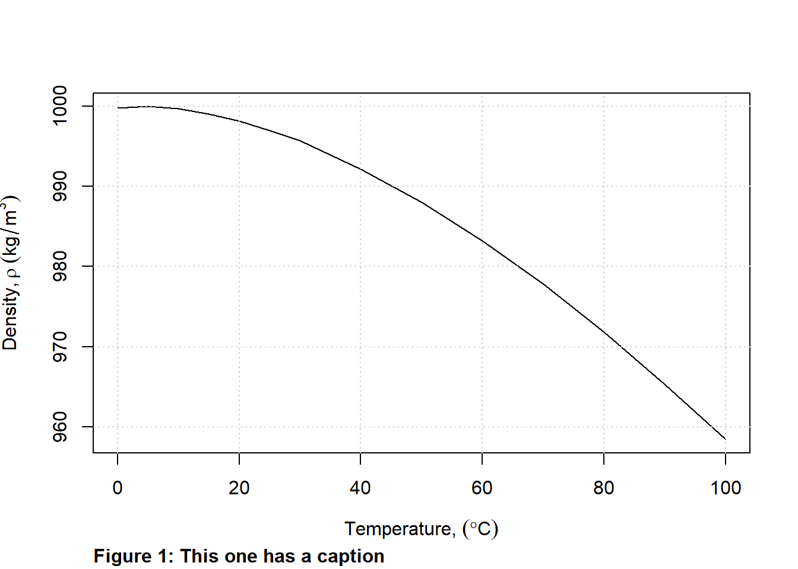
Try variations of that to see what happens. Greek letters are simply spelled out; superscripts are preceded by ^, subscripts are enclosed by [], the tilde (~) adds a space. You can of course change axis limits, fonts, colors, etc. Try adding gray gridlines with grid() to make the plot more readable.
When you have a final plot you want to include in another report (importing into Word, for example), you can export it from RStudio using the Export button, which allows you to save a plot as a JPG, PNG, PDF, or any of many other options.
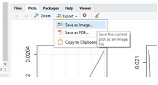
5 Writing a function (optional)
Rather than write a single equation for interpolation, it is far better to write it as a function. In this case it can look like the following (again, this is adapted from the T.G. Cleveland reference):
#The interpolation function
interp_value <- function (x,xvector,yvector) {
xvlength <- length (xvector)
yvlength <- length (yvector)
for (i in 1:( xvlength -1) ){
if( (x >= xvector [i]) & (x <= xvector [i +1]) ){
result = yvector [i]+( yvector [i+1] - yvector [i]) *(x - xvector [i])/(xvector [i+1] - xvector [i])
return (result)
}
}
}The function can then be called with a command such as the following:
dens <- interp_value(44,temps,densities)
print(dens)## [1] 990.52What would happen if your temperature and density vectors had different numbers of values in them? What if you put in a value outside the range of temperatures in the xvector? These sorts of cases should be caught by a good script, so a final R script would need to include quite a few if statements to anticipate these situations. Writing functions is essential to creating scripts that are more efficient and easier to read and understand.
6 Reading in data from a csv file or a xlsx spreadsheet
Rather than type in the table values as was done above, usually you’ll be able to import a csv (comma delimited) file (used in the example below), or from Excel files using the readxl package.
If saved into your working directory, files can be read in directly. R can also read files stored remotely, such as on github. The file water_properties_SI.csv is a csv file of the water properties table and looks like this:
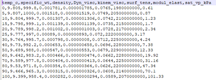
This can be read directly into R (in the statement below head=TRUE means the first row is a header with the names of each column; sep=”,” tells R commas are used to separate columns):
watertable <- read.csv("https://raw.githubusercontent.com/EdM44/classes/refs/heads/master/R_exercises/01.Intro_tutorial/water_properties_SI.csv",head=TRUE,sep=",")Notice it is stored in a different format than a variable – it is a data frame, but basically think of it as rows and columns with column names. Click on the name of the new table in the Environment to see what it looks like in R:
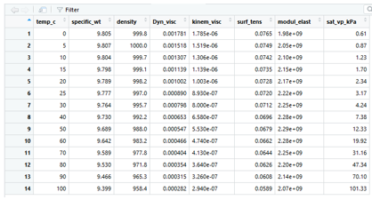
You can access each column by appending a $ and the column name to the table name:
watertable$density## [1] 999.8 1000.0 999.7 999.1 998.2 997.0 995.7 992.2 988.0 983.2
## [11] 977.8 971.8 965.3 958.4returns the densities. Likewise you can pick out one value by appending an index value like [3]. One advantage of data frames is that you can choose a value from one column using a condition of another. To get the density associated with a temperature of 40\(^\circ\)C:
watertable[watertable$temp_c == 40,]$density## [1] 992.2You can play around with different formulations of these commands to see how you could rewrite the interpolation function to work with any water property, not just density.
Of course, we’re not the first to try interpolating values, which means there are packages to do this. The base R installation includes the approx function (which returns two values: appending $x returns the input lookup value 44.0, appending $y gives the interpolated density value 990.52):
approx(watertable$temp_c,watertable$density,44.0)$y## [1] 990.52What if you wanted to look up 10 values? You can do them all at once, skipping the for loop.
ten_temps <- c(5,10,15,20,25,30,35,40,45,50)or more simply:
ten_temps <- seq(from=5, to=50, by=5)then the densities for all 10 values can be found with one command.
ten_densities <- approx(watertable$temp_c,watertable$density,ten_temps)$y7 Creating new values based on other variables
Here we’ll start with reading in a file of the standard atmosphere properties, similarly to what was done earlier:
stdatmosphere <- read.csv("https://raw.githubusercontent.com/EdM44/classes/refs/heads/master/R_exercises/01.Intro_tutorial/standard_atmosphere_SI.csv",head=TRUE,sep=",")The elevations (or altitude) and atmospheric pressures from the table can be placed into new arrays (this is not necessary, but is demonstrates how this is done):
elevs <- stdatmosphere$altitude_m
atmos_p <- stdatmosphere$pressure_kPaWhile pressure is already in the standard atmosphere table, as an example we will calculate new estimates of the air pressure using the approximation equation (Allen et al., FAO Irrigation and Drainage Paper. No. 56, 1998) where P is in kPa, Z is in meters: \[P=101.3\left(\frac{293-0.0065Z}{293}\right)^{5.26}\]
To create a new estimated pressure for each elevation, you could build a for loop and run it for each elevation to estimate the pressure.
pressure_estimated <- c() # create an empty vector to store each result
for (elev in elevs) {
p_est <- 101.3*((293.0 - 0.0065*elev)/293.0)^5.26
pressure_estimated <- c(pressure_estimated, p_est) # add new result to vector
}As long as the function is vectorized (meaning it can accept a vector as input and returns a vector of the same length), which is generally true if built-in R functions are used, then all elevations can be used as input to calculate all pressures. The equation for pressure satisfies this condition, so it can produce the same output as the loop above in a single, more efficient step:
pressure_estimated <- 101.3*((293.0 - 0.0065*elevs)/293.0)^5.26The new pressure_estimated variable has the same number of elements as elevs (and every other column in stdatmosphere data frame, so many plots could be made).
One example is shown here, plotted using the techniques from earlier,
with x = pressure_estimated and
y = stdatmosphere$pressure_kPa. With the hints given below,
try to recreate something like this.
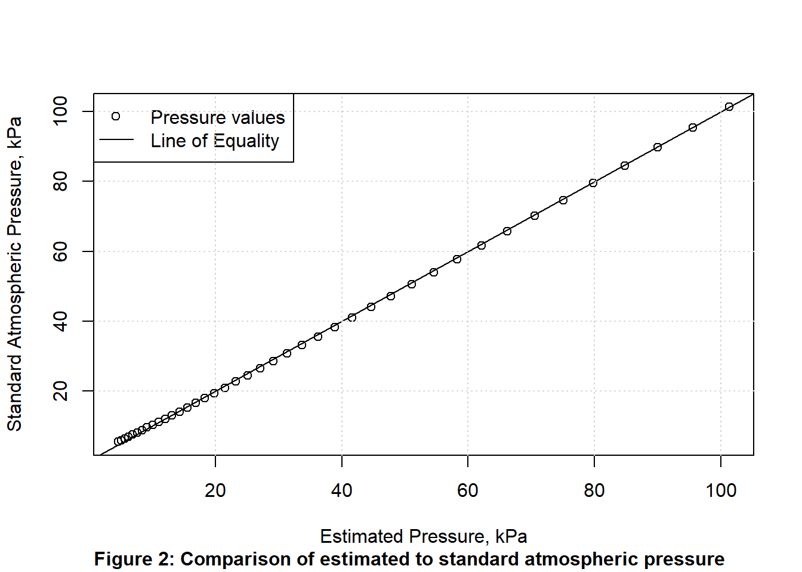
The line of equality, on which all points would fall if the
approximation were perfect has a slope of 1 and an intercept of 0, so is
drawn on the plot by adding abline(a=0,b=1) after the plot
command).
The legend in the plot was added by the intuitive command legend, similar to this:
legend('topleft',c('Pressure values','Line of Equality'), lty=c(NA,1),pch=c(1,NA),bg='white')This was tricky because of the mix of points and lines for symbols, where the line types were specified with a list where the first value was NA (meaning not available), and likewise since the second legend symbol is only a line, the second symbol was specified as NA.
8 Estimating a Curve Fit (Regression)
Suppose you look at water density and guess that for temperatures above 20C it is linearly related to temperature. Here the data for temperature (x) and density (y) is assigned:
x <- c(20,25,30,40,50,60,70,80,90,100)
y <- c(998.2,997,995.7,992.2,988,983.2,977.8,971.8,965.3,958.4)A linear regression (linear model) is estimated using the lm function, and the results retrieved with the summary command.
linfit <- lm( y ~ x )
summary(linfit)##
## Call:
## lm(formula = y ~ x)
##
## Residuals:
## Min 1Q Median 3Q Max
## -2.8479 -1.2266 0.2482 1.6072 2.1709
##
## Coefficients:
## Estimate Std. Error t value Pr(>|t|)
## (Intercept) 1010.7010 1.4680 688.49 < 2e-16 ***
## x -0.4945 0.0235 -21.05 2.73e-08 ***
## ---
## Signif. codes: 0 '***' 0.001 '**' 0.01 '*' 0.05 '.' 0.1 ' ' 1
##
## Residual standard error: 1.98 on 8 degrees of freedom
## Multiple R-squared: 0.9823, Adjusted R-squared: 0.98
## F-statistic: 442.9 on 1 and 8 DF, p-value: 2.73e-08This returns a R\(^2\) of 0.98, which would indicate a reasonable fit. The residual standard error (RSE) of 1.98 with 8 degrees of freedom (df), can be used to compare different methods of fitting the data. Plotting results is always advised, which can be done in a simple way as follows (using several techniques from above):
plot(x, y, xlab=expression("Temperature, " (degree*C)),
ylab=expression("Density," ~rho~ (kg/m^{3})))
abline(linfit)
grid()
legend("topright",legend=c("data","linear fit"),lty=c(NA,1),pch=c(1,NA))
title(sub = "Figure 3: Water density variation with temperature.", font.sub = 2, adj = 0) 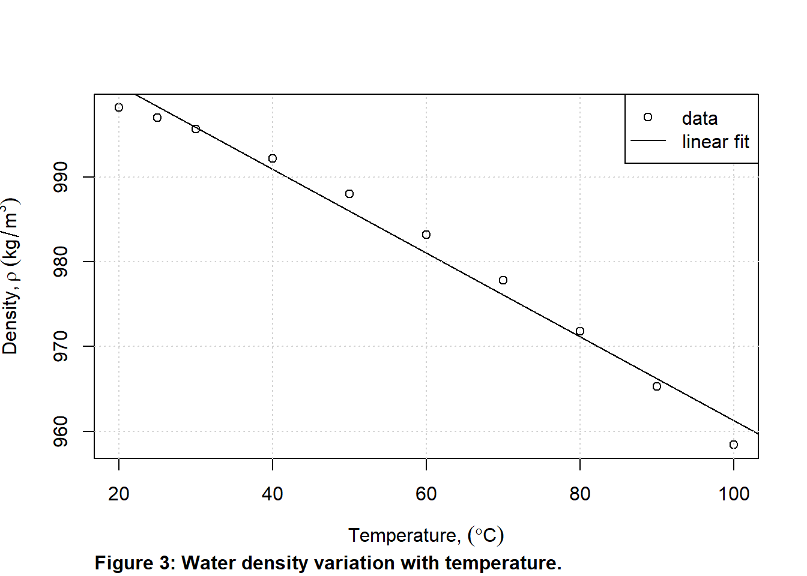
While the R\(^2\) value is high, the
data do not appear linear. If you want to try fitting another curve to
the points there are many options. You can use a modified version of the
lm command, such as
fitlm <- lm(y ~ poly(x, 2, raw=TRUE)) to return the
coefficients of the equation \(y=c+b*x+a*x^2\). A more general function is
the nonlinear least squares solver, nls, which can
accommodate any equation form:
df <- data.frame(x = x, y = y) # put input into data frame
fitnls <- nls(y ~ a * x^2 + b * x + c, data = df, start = list(a=0, b=0, c=0))
print(fitnls)## Nonlinear regression model
## model: y ~ a * x^2 + b * x + c
## data: df
## a b c
## -3.067e-03 -1.341e-01 1.002e+03
## residual sum-of-squares: 0.1734
##
## Number of iterations to convergence: 1
## Achieved convergence tolerance: 7.955e-07The nls output reports a residual sum of squares (RSS).
To compare this to the RSE from the linear regression, recall \(RSS=df*RSE^2\), so the polynomial fit
produces an RSS much smaller than the linear regression (\(RSS=8*1.98^2=31.36\)), indicating a much
better fit. As always, a plot helps demonstrate the quality of the fit
to the data. A simple lines(x, predict(fitnls) could add
this polynomial to the prior plot. Sampling the function at many points
(here 100) creates a smoother curve.
plot(x, y, xlab=expression("Temperature, " (degree*C)),
ylab=expression("Density," ~rho~ (kg/m^{3})))
manyx <- seq(min(x), max(x), length.out=100)
lines(manyx, predict(fitnls, list(x = manyx)), lty = 2)
grid()
legend("topright",legend=c("data","2d polynomial fit"),lty=c(NA,2),pch=c(1,NA))
title(sub = "Figure 4: Demonstration of a non-linear curve fit.", font.sub = 2, adj = 0) 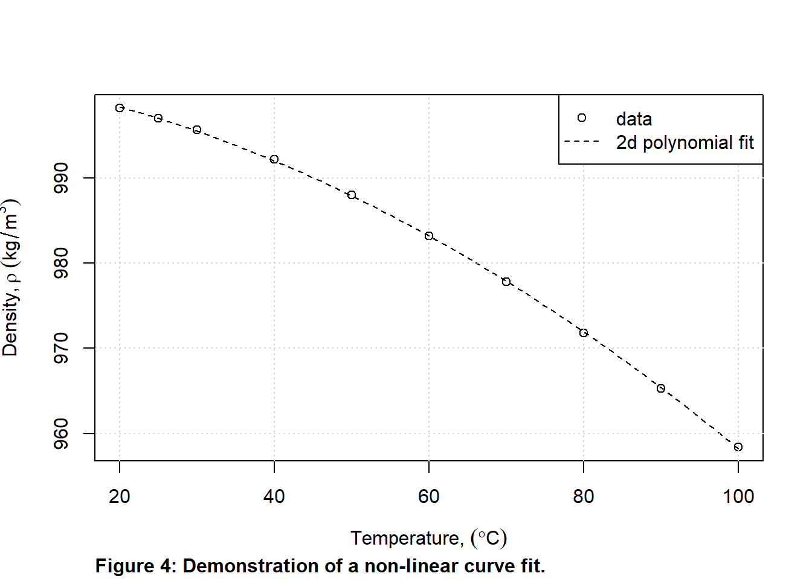
9 Solving for an equation parameter from lab observations
A linear regression is a best fit to observations, where the slope and intercept of the regression equation are fit to the data so that the error (between the regression line and the observed points) is minimized. This can be done more generally using optimization in R, which can work like Excel’s solver function.
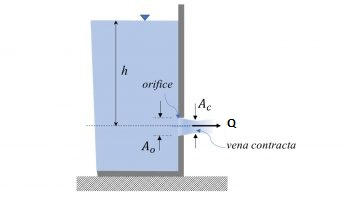
Take, for example, lab results for the draining of a container (image is from Ahmari and Kabir, Applied Fluid Mechanics Lab Manual, 2019). The discharge, \(Q\), is described by: \[Q=C_dA\sqrt{2g \Delta h}\] \(C_d\) is a coefficient of discharge, which accounts for the reduction in flow to the the contraction of the jet and the friction as water discharges. This example estimates the value of \(C_d\) using these lab observations for a container with opening diameter, \(d = 10 mm\):
| h, m | Q, Liters/s |
|---|---|
| 0.5 | 0.240 |
| 0.4 | 0.213 |
| 0.3 | 0.187 |
| 0.2 | 0.151 |
Here the optimize function is used, which is part of the basic R installation.
Begin by entering the input data, ensuring consistent SI units.
h <- c(0.5, 0.4, 0.3, 0.2) # in m
Qobs <- c(0.240, 0.213, 0.187, 0.151)/1000 # convert to m^3/s
d <- 10/1000 # convert to m
A <- pi/4 * d^2 # m^2
g <- 9.81Next set up the function with the equation describing the theoretical flow, \(Q_{theor}\) based on the head, \(h\).
# Function to estimate flows, based on observed head differences
# Uses a Cd value that does not need to be defined yet
Qtheor <- function(Cd, h) {Cd * A * sqrt(2 * g * h)}Now set up a function that describes the error. This example uses the sum of the squared errors between observed and theoretical \(Q\) values.
# Function to minimize
SSE <- function(Cd, h, Qobs) { sum((Qobs - Qtheor(Cd, h))^2) }Now use the optimize function. The second argument sets the limits on \(C_d\) values as between 0.1 and 1.0. the last two arguments are the data needed by the SSE function. The $minimum selects the optimal \(C_d\) value to display.
(Cd_opt <- optimize(SSE, c(0.1, 1.0), h = h, Qobs = Qobs )$minimum)## [1] 0.9739836The optimal \(C_d\) is close to 1.
It is good practice to plot the estimated vs. theoretical values along
with a line of equality, similar to above. Theoretical Q values can be
estimated using the function defined above, such as
Qtheor_values <- Qtheor(Cd_opt, h).
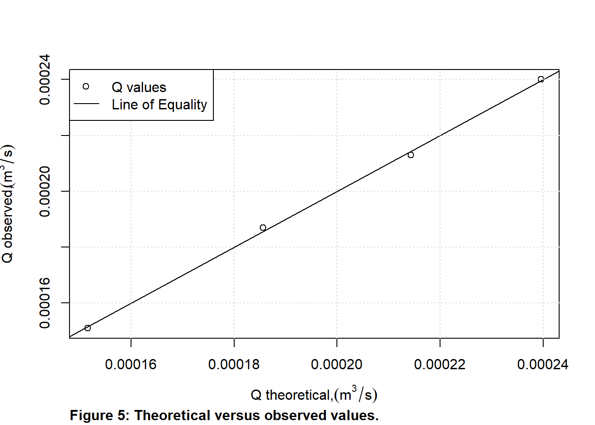
More advanced optimization is available for multiple parameters, a few examples of which are in chapter 9 of Hydraulics and Water Resources: Examples Using R.
10 Quitting an RStudio session
When you quit from RStudio, you have the option to save your workspace (by saving an image to a file called .Rdata in your working directory), which can be restored next time you open RStudio. It should also prompt you to save your R scripts, which you should do.
11 References
Allen, R. G., Pereira, L. S., Raes, D., and Smith, M. (1998). “Crop evapotranspiration: Guidelines for computing crop requirements.” Irrigation and Drainage Paper No.56, FAO, Rome, Italy.
Cleveland, T.G., ‘Fluid Mechanics Computations in R: A Toolkit to Accompany CE 3305’, Texas Tech University (2018).
Lovelace, Robin, and James Cheshire. ‘Introduction to Visualising Spatial Data in R’. Comprehensive R Archive Network, no. 03 (2014).
Stauffer, R., J. Chimiak-Opoka, L.M. Rodríguez-R, T. Simon, A. Zeileis, Introduction to Programming with R, Version updated: 2021-06-01, https://discdown.org/rprogramming
Appendix 1 – Installing Packages on Engineering Computers
NEVER use install.packages in a script. Only use the console or RStudio’s Packages tab
To test whether a package is installed, try to load it using library. For example, to test if the package readxl exists, open RStudio and in the pane that has the command console, at the “>” prompt type library(readxl) and hit Enter. If there is no output from R, this is good news: it means that the library has already been installed on your computer. Once a package is installed on a computer (or as a user in the engineering lab) it does not need to be installed again.
If there is error message, it needs to be installed using install.packages. For example on a personal computer (but not the networked ECC computers) you would type install.packages(“readxl”), and then the library(readxl) command would work and the functions in the package would be available. The package will download from CRAN (the Comprehensive R Archive Network); if you are prompted to select a ‘mirror’, select one that is close to your home. To do this on a networked system like in the lab, you first need to set up a few things, as follows.
On networked drives, R will look for certain places where it can download libraries and packages. R can work with drives that start with a letter (such as Z:\) but cannot work with network addresses (like \\machine\…). On the engineering lab computers, Z:\ and \\samba1\username are equivalent, so you just need to tell Windows and R that these are the same. R looks for certain locations based on something called environment variables, so you have to set that.
In Windows, click the search button and look for Control Panel.
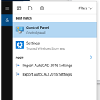
On the control panel, search for environment variables:
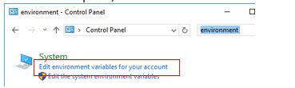
Click the “Edit the System Variables for your account.”
In the top window for User Variables, click New.
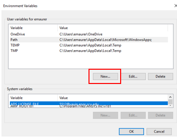
Add the following name and value:
- Variable name: R_LIBS_USER
- Variable value: Z:\R_packages
Click OK. Now it should appear in your list of user environmental variables.
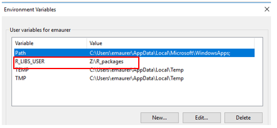
R creates the directory defined by Value and installs packages there. You may use another path if you prefer – R will just install packages where you define.
Click OK to save the variable and OK again to exit the environment variable window. You will need to log out and log back in again to activate this variable.
You can now test to see if you can install a library, and hopefully will see a “success” message, something like this:
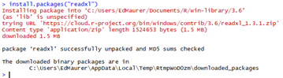
You’ll see when one package needs another package to work (a ‘dependency’) it automatically looks for it and installs it if needed. Periodically you will receive errors because a package needs updating. Since you can only install or update packages in the library location you just set, you can specify to only update packages in that library with a command like:
.libPaths() #returns all of your current package locations
update.packages(lib.loc = "Z:/R_packages") #specify the one you createdAppendix 2 – Exporting your R script and output
Before this can be done on ECC computers, you must create a user environment variable for R following the steps in Appendix 1. You only need to do that the first time you install an R package. If you haven’t already, do that first, then return to this.
To ensure a proper header appears with your name, the lab title, and the date, add something like this to the very top of your R script:
#' ---
#' title: "LAB 1 - calculating friction factors"
#' author: "Fulano Zutano"
#' date: "February 8, 2019"
#' ---The date: line can be customized to insert the current
date as described in the Bookdown
documentation. Each of these lines begins with #’ (with the single
quote). That tells the document compiler in R (e.g., knitr) it is a
special (“markdown”) comment, which can create a nice document. Place
lines like this (starting with #’) anywhere in a document to add text
before a chunk of code, for example. Add headers with #’ # for h1, #’ ##
for h2, etc. A line starting with #’ * creates a bulleted list (add 4
more spaces per level of indentation). Add hyperlinks with #’ text to appear. More details are here
and here.
An excellent approach to creating a final document is to write everything as R markdown (saved as “.Rmd” instead of “.R”) and then compile or knit the document, but that is beyond the scope of what we’ll do here. You can read about creating a Rmd file in many references, including those above and the chapter on Reporting in Stauffer et al. For now, just add the header information above to your “.R” script and be sure the code is neat and clearly documented (described at the beginning of this document). A simple example is available here. Refer to that to see how blank lines, documentation, and occasional lines beginning with #’ can help produce better output.
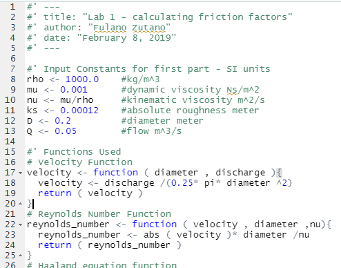
In RStudio, select File->Compile Report to do just that.
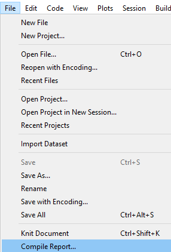
The simplest and recommended approach is to select “HTML” format.
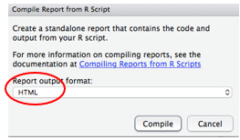
If this is the first time you have done this, you may see this notice about installing packages. Say Yes and it will install them.
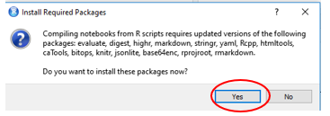
A window should open in RStudio showing the compiled HTML. On that window click “Open in Browser” and from your browser you can print the page to a pdf file.
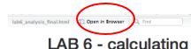
The final report should look professional and neat.
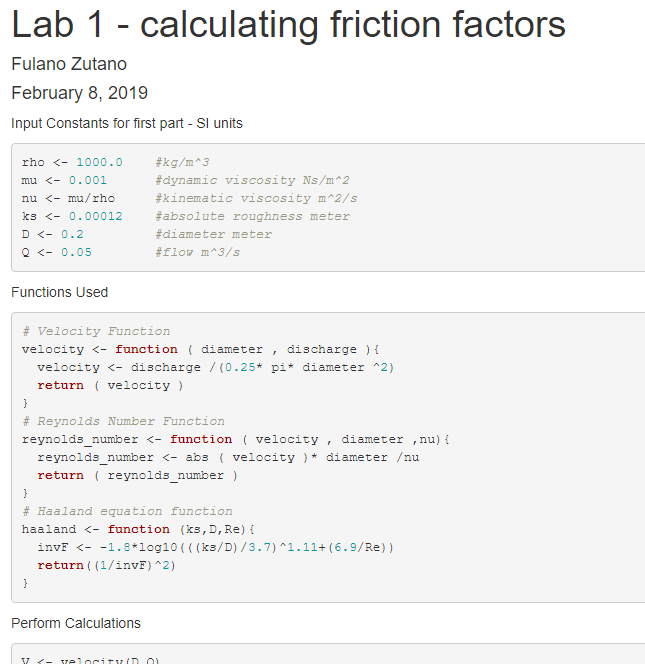
Appendix 3 – Fixing common problems
Failure to produce html/pdf output on ECC lab computers (Windows)
Sometimes on networked computers (like the ECC lab) R/RStudio will fail to create an html version of your script and output when using the “compile document” or “knit document” menu item. If the error message says something about “pandoc” there is a simple fix that works in many cases. The issue is often related to saving the R project to your Desktop or My Documents location. That is a fine place to save the files, but how you access them makes a difference.
For example, if you click on a folder on the desktop:
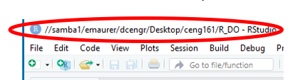
Then navigate to a Rproj file, you can double-click it and it will open in RStudio. Note that the path to the project starts with “//” indicating a network drive. While pandoc can work with these it doesn’t do so easily. If you run “compile document” or “knit document” on this it will likely fail.
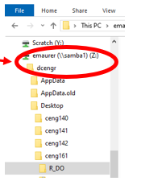
A simple fix is to open Windows Explorer and navigate to Z:\dcengr\ and then to your folder with the R project.
Double-clicking on the Rproj file from here opens it in RStudio, as before notice in RStudio the path to the project now starts with a letter (Z:/). Now the command should work and produce html output.
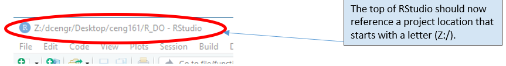
Another fix is to just work from a USB drive, which will always have a letter assigned to it.
Packages are incompatible with current R version
As packages evolve or R is updated, packages sometimes need to be updated. If you receive a warning indicating this, in RStudio simply go to the packages tab in the lower right panel, click update, and select the packages you need to update.
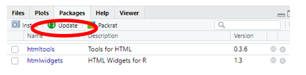
Compiling a Document produces an error that package needs to be reinstalled
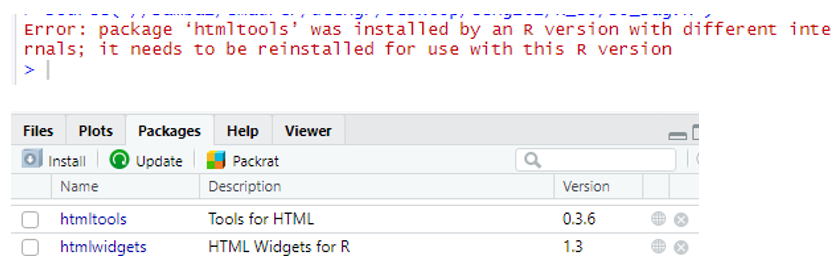
At the console, type commands to remove and re-install the package. This example is for the htmltools package, which was the source of the error above.
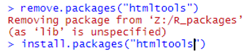
 This work is licensed under a Creative Commons Attribution 4.0 International License.
This work is licensed under a Creative Commons Attribution 4.0 International License.